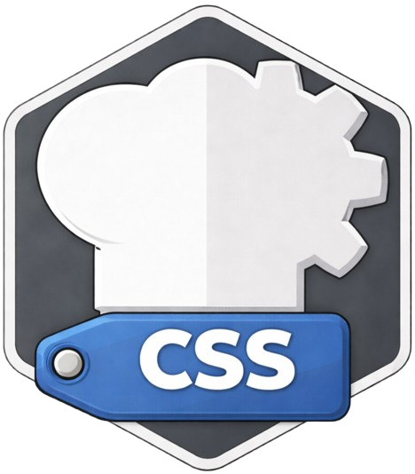

INPUT
7b 22 73 74 61 74 75 73 22 3a 22 6f 6b 22 7d

ZZX-LABS R&D // CYBERCHEFKIT
CSS theme and styling system for CyberChefKit interfaces, with live design-token editing, component previews, theme presets, contrast checks, variable import/export, and deployable standalone CSS generation.
CSS // UI THEMES
A live sample of cards, controls, code, status, and data output.
INPUT
7b 22 73 74 61 74 75 73 22 3a 22 6f 6b 22 7d
OUTPUT
Theme variables apply instantly to this preview region.
PROJECT
OUTPUT
Exports plain CSS custom properties and component rules with no framework dependency.